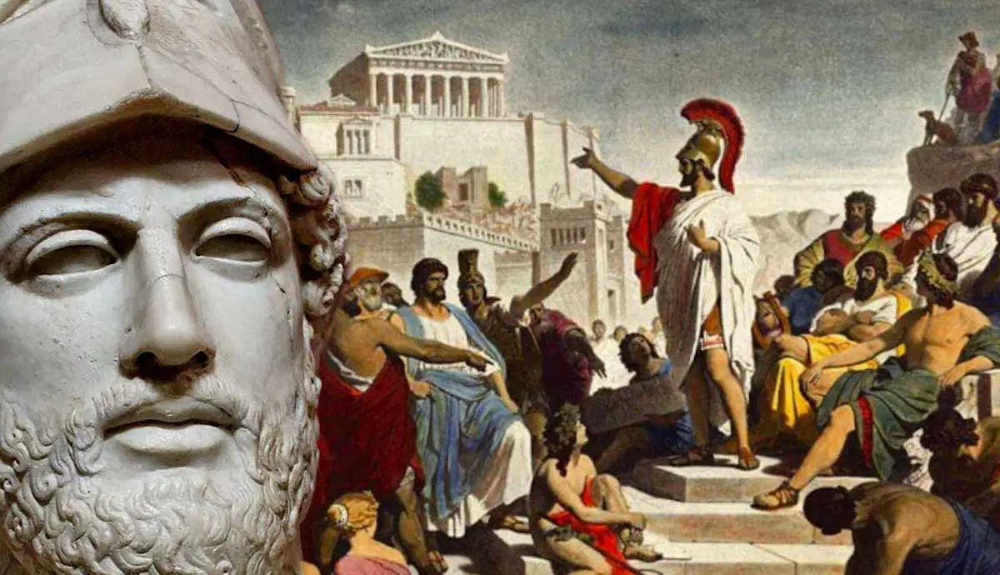

Politics
Politics in Ancient Greece
THE POLITICAL SYSTEM OF ANCIENT GREECE

Ancient Greece had many different forms of government as people tried to decide who should hold political power and how a society should be ruled. Some believed that power should belong to a single ruler, while others supported rule by a small group or by the citizens themselves. As a result, Greek city-states developed different political systems, and some changed their governments several times throughout their history. One of the most important developments was democracy, which became one of Ancient Greece's most influential contributions to political thought.
Government varied greatly between Greek city-states. In some places, power belonged to kings or wealthy families, while in others, citizens had a greater role in making decisions. The four most common forms of government in Ancient Greece were:
- Democracy - Government in which citizens participated in political decisions. In ancient Athens, political rights were mainly limited to free adult male citizens.
- Monarchy - Government ruled by a king or another individual whose position was usually inherited.
- Oligarchy - Government in which a small, privileged group held most of the political power.
- Tyranny - Government in which an individual seized and held power outside the established constitutional system. In ancient Greece, tyrants were not necessarily as cruel as the word suggests today.
Historians learn about Greek political systems through surviving speeches, inscriptions, laws, decrees, and written accounts. Athens is particularly well documented, allowing historians to understand its political development more clearly than that of many other city-states. However, important details about how governments operated in other parts of the Greek world remain uncertain.
Several ancient writers provide valuable information about Greek government and political life. Aristotle's Politics examined different forms of government, while The Constitution of the Athenians described the development and organisation of Athenian politics. Historians such as Herodotus, Thucydides, and Xenophon also recorded political events and conflicts. Meanwhile, the playwright Aristophanes used comedy to criticise politicians and make fun of political life.
The variety of government systems in Ancient Greece shows that the Greeks actively explored different ways of organising society. Although political rights were far from equal by modern standards, their debates about citizenship, leadership, law, and democracy influenced political ideas for centuries.
Democracy
The word democracy comes from the ancient Greek word dēmos, meaning the body of citizens. Although Athens is best known for developing democracy (dēmokratia) around the 5th century BCE, it was not the only Greek city-state to experiment with this form of government. Other examples included Argos, Syracuse, Rhodes, and Erythrai. However, Athens is the city-state about which historians have the most information.
In Athens, the Assembly was the main place where citizens discussed political matters and made decisions. It met on the Pnyx hill, in a space that could hold approximately 6,000 people. In theory, male citizens aged 18 and over could speak and vote, usually by raising their hands. During certain periods, citizens were even paid for attending meetings. This helped people who lived farther away or could not easily afford to take time off work to participate in political life.
However, not everyone living in Athens had political rights. Citizens probably represented only around 10-20% of the city's population, and only a smaller number regularly took part in politics. Wealthy and influential citizens, especially those who were skilled public speakers, often had greater influence over decisions. Some critics, including the historian Thucydides and the playwright Aristophanes, argued that ordinary citizens could be persuaded too easily by powerful speakers and popular leaders, known as demagogues. One of the most famous controversial decisions made by the Athenian democracy was the execution of the philosopher Socrates in 399 BCE.
The Assembly discussed a wide range of issues, including the appointment of officials, the management of food supplies, and military decisions. Athens also had a smaller council called the boulē, which consisted of 500 citizens selected by lot for limited terms. Its responsibilities included preparing topics for the Assembly and organising government business. During emergencies, it could also make certain decisions without waiting for the full Assembly to meet. Decisions made by the Assembly could be challenged in the courts, providing another way to review political decisions.
Other Greek city-states had councils that played important roles in government. Sparta, for example, had the gerousia, a council of elders made up of men over 60, together with the two Spartan kings. It held important legal powers and helped guide the state's decisions. Similar councils of elders existed in places such as Corinth and Stymphalos. Athens also had the Areopagus, a council whose members served for life. These different institutions show that ancient Greek city-states developed a variety of political systems, even when they shared some traditions and ideas about citizenship and public decision-making.
Other Greek city-states also had democratic assemblies, although some required citizens to own a certain amount of property before they could participate. For example, the Boiotian Federation introduced such a requirement between 447 and 386 BCE. In some states, democratic assemblies existed alongside a monarchy, as happened in Macedonia and Molossia.

Pericles
Pericles was an important Athenian statesman, politician, and general who played a major role in shaping ancient Athens during its Golden Age. He came from a wealthy family and received a good education, developing an interest in politics, philosophy, and the arts.
During his leadership, Pericles supported Athenian democracy and introduced measures that allowed more male citizens to participate in public life. He also encouraged the development of Athens as a cultural and intellectual centre, supporting artists, philosophers, and writers.
One of his most famous achievements was the building programme on the Acropolis, which included the construction of the Parthenon, a temple dedicated to the goddess Athena. These projects strengthened Athens' reputation for architecture and art.
However, Pericles also led Athens during the beginning of the Peloponnesian War against Sparta in 431 BCE. The conflict placed great pressure on the city, and an outbreak of plague struck Athens soon afterwards. Pericles died in 429 BCE, but his influence on Athenian politics, democracy, and culture remained significant throughout history.
Monarchy
Monarchy was relatively uncommon in ancient Greece compared with other forms of government, such as democracy and oligarchy. In a monarchy, political power was held by a king, and the position was usually passed down through a family. The difference between a monarch and a tyrant was not always clear. However, a hereditary ruler was more likely to be viewed positively if they governed fairly and acted in the interests of their people, rather than using their position only to benefit themselves.
Some of the best-known Greek monarchies existed in Macedonia and Epeiros. In these states, kings shared power with an assembly of citizens or representatives. Although these assemblies had a role in political life, their influence was often limited, and the king remained the most powerful figure in the government. The exact balance of power depended on the state and the circumstances, especially during periods of conflict or military expansion.
Sparta had a particularly unusual political system because it was ruled by two kings at the same time. This arrangement was different from a traditional monarchy with a single ruler. The two Spartan kings came from separate royal families and held important religious and military responsibilities. Their authority was especially significant during wartime, when they could lead the Spartan army into battle. However, they were not absolute monarchs and could not make every decision independently.
During peacetime, the kings' authority was limited by other political institutions. One of the most important was the group of officials known as the ephors (ephoroi), who were elected by the Spartan assembly. The ephors supervised aspects of public life and helped keep the kings' power under control. Sparta also had the gerousia, a council of elders that advised on important matters and held certain judicial powers. The kings were members of this council from a young age, while other men generally had to reach the age of 60 to join, giving the royal members a considerable advantage.
Despite their high status, Spartan kings were not completely above the law. Their actions could be questioned, and they could face trials or even be sent into exile. The Spartan system therefore combined hereditary leadership with elected officials and other institutions that restricted royal authority. For this arrangement to function, cooperation and a degree of political agreement between the different groups were necessary. Monarchy in ancient Greece was therefore not always a system in which one ruler held unlimited power; in some states, it existed alongside other institutions that influenced how the government operated.
Oligarchy
Oligarchy was a form of government in which political power was controlled by a select group of people. This group could consist of only a few individuals or a larger section of society. In ancient Greece, particularly from the Athenian perspective, any political system that prevented the entire citizen body from participating in power was often described as an oligarchy, provided it was not a monarchy or a tyranny. Oligarchies were among the most common forms of government in Greek city-states and sometimes came to power when democratic systems were weakened or overthrown.
In an oligarchy, decisions were generally made by a privileged group rather than by the wider population. Membership could depend on wealth, family background, social status, or political influence. As a result, most ordinary citizens had little or no say in how their city-state was governed. Although oligarchic governments existed in many parts of the Greek world, historical information about how they operated is limited.
Athens experienced several periods of oligarchic rule despite being famous for its democracy. In 411 BCE, a group known as the Four Hundred seized power and replaced the democratic Assembly with a much smaller ruling body. Their government was later replaced by a more moderate oligarchic system that claimed to represent 5,000 citizens. These events demonstrated how political instability and conflict could lead to the removal of democratic institutions.
Another significant example occurred in 404 BCE, following Athens' defeat in the Peloponnesian War. A group known as the Thirty Tyrants took control of the city with the support of Sparta. Their rule became infamous for its violence, confiscation of property, and executions of political opponents. Their actions created widespread fear and resentment, and their regime was eventually overthrown, allowing democracy to be restored in Athens.
Oligarchic governments also existed in other Greek city-states, including Megara and Thebes. Their experiences show that ancient Greece did not follow a single political model. Instead, city-states adopted different systems depending on their social structures, conflicts, and struggles for power. While democracy allowed a portion of the population to participate in government, oligarchy concentrated authority in the hands of a smaller and often more privileged group.
Tyranny
In ancient Greece, a tyrant was a ruler who gained power outside the accepted laws or political system, sometimes by overthrowing the previous ruler. Unlike a king, whose position was usually inherited, a tyrant generally took control through force, political support, or the exploitation of instability. However, the word tyrant did not always mean a cruel or evil ruler, as it often does today. Some tyrants governed in ways that benefited their cities, although they also sought to maintain their own power and interests.
Several Greek city-states experienced periods of tyranny. In Athens, Peisistratos came to power around 560 BCE and is often remembered as a relatively popular ruler who supported public works and religious festivals. His rule and the political changes that followed helped shape the conditions in which Athenian democracy later developed. In Corinth, the Kypselid dynasty ruled during the 7th and 6th centuries BCE, including Periander, one of its best-known rulers. Other examples include Pheidon of Argos, Lycophron of Thessaly, and Polycrates of Samos, who ruled during the 6th century BCE.
Syracuse, a powerful Greek city in Sicily, also had several famous tyrants. Dionysius I seized power in 405 BCE and strengthened Syracuse's military position. His son, Dionysius II, succeeded him in 367 BCE. Their rule illustrates how tyranny could become established over generations, even though tyrants did not necessarily have a hereditary right to govern.
In Athens, tyranny gradually became associated with the opposite of democracy. Athenians valued the idea that citizens should participate in government rather than live under the authority of a single ruler. This contrast also influenced how they viewed foreign kings, particularly the Persian rulers Darius I and Xerxes I, who were often portrayed by Greek writers as examples of absolute power. The different experiences of Greek city-states show that tyranny could take many forms, ranging from rulers who supported their communities to those who maintained control through violence and oppression.
Public Officials
In Athens, laws were administered and enforced by officials known as archai, or magistrates. In principle, citizens were eligible to hold many of these positions, and participating in public affairs was considered an important responsibility of citizenship. The ancient Greeks often viewed the state not simply as an authority that restricted individual freedom, but as a community in which citizens could take an active role in political and social life.
To prevent any individual from gaining too much power, many public positions had short terms of office, and re-election was often restricted or prohibited. This meant that officials would eventually return to the position of ordinary citizens, helping to limit the possibility of long-term abuse of power. Athens also had different boards of officials responsible for administrative tasks, with members often selected from its ten traditional tribes. Many positions were assigned by lottery rather than election, which helped reduce opportunities for bribery and gave more citizens a chance to serve.
Despite these measures, participation in government was not equally accessible to everyone. Holding public office often required considerable free time, and some responsibilities involved paying for public projects, such as building ships or organising festivals. Consequently, wealthier citizens were often better able to take on important public roles, even when the system was designed to encourage wider participation.
In Sparta, one of the most important groups of officials was the five ephors. They were probably elected by the Spartan assembly and served for only one year. During their term, however, they held considerable authority over public life. They could supervise other officials and help ensure that the Spartan kings and government institutions followed the state's rules. Their role made them an important part of the system that balanced power in Sparta.
Military commanders also held influential public positions in several Greek city-states. In Athens, the ten elected generals, known as strategoi, were responsible for military leadership but could also influence political decisions and the issues discussed by the Assembly. They remained accountable to the citizens and could face votes of confidence. Nevertheless, some generals maintained their positions for long periods. Pericles, for example, was repeatedly elected as a strategos for approximately 15 consecutive years, demonstrating how a popular and influential leader could remain in office despite the rotation of many other public positions.
Overall, public officials played a major role in the administration of ancient Greek city-states. Although systems varied between places such as Athens and Sparta, many included methods intended to distribute authority, supervise leaders, and prevent power from remaining permanently in the hands of a single individual.
Chat
Have you ever wondered what it would be like to live in Ancient Greece, especially during the time when democracy was first developing?
11:00Honestly, yes! It's crazy to think that the political system we have today has roots in Ancient Athens.
11:01Exactly! Athens developed a form of direct democracy around the 5th century BCE. Citizens could actually gather in an Assembly and vote on important decisions themselves.
11:02Wait, so they didn't elect politicians to make all the decisions for them, like we do today?
11:05Not in the same way. Eligible male citizens could participate directly in political discussions and vote. But the system excluded women, enslaved people, and foreigners living in Athens.
11:07So, even though they called it democracy, a huge part of the population had no political voice?
11:10Pretty much. Their idea of citizenship was very different from ours. Political participation was considered an important responsibility, but only a limited group had those rights.
11:11What about Sparta? Was its political system similar to Athens?
11:12Not really! Sparta had two kings, a council of elders, and other political institutions. Its society placed much greater emphasis on military discipline, and political power was organized very differently from Athens.
11:15That's interesting. So, even within Ancient Greece, different city-states had completely different ways of governing themselves.
11:16Exactly! And philosophers like Plato and Aristotle even questioned which political systems were best suited to governing a city.
11:19I guess the debate about who should have power, how leaders should be chosen, and what makes a government fair is much older than we think.
11:21Definitely. Ancient Greece didn't invent every idea behind modern politics, but its experiments with democracy and political philosophy had a lasting influence on how people think about government today.
11:22It's amazing that questions people discussed thousands of years ago are still relevant today!
11:23